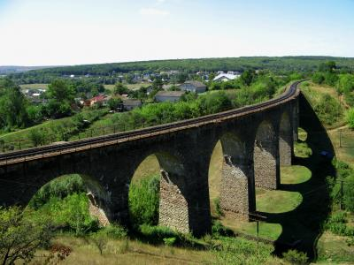

5 мест в Украине которые я хочу посетить
- Тоннель любви
- Алешковские пески
- Розовые озера
- Плебановский виадук
- Букский каньон
Я, на самом деле, не любитель путешествовать. Но есть несколько мест в которых я хочу
обязательно побывать. Конечно, этих мест больше чем будет описано тут.
В некоторых я уже была и
вычеркнула их из списка, в другие я еще обязательно приеду.
В этой статье я расскажу всего лишь о 5-ти из тех, где еще не была.
1. Тоннель любви
Ровенская область
Это романтическое местечко находиться в 20-30 минутах от города Ровно, неподалеку от поселка Клевань.
Представляет собой ботанический феномен — зелёный тоннель в лесном массиве длиной около 4 км, созданный зарослями деревьев и кустов, которые сплелись между собой и создали плотный тоннель точной арочной формы.
Промышленный поезд проходит по этому пути трижды в сутки, благодаря чему тоннель сохраняет форму: проходящий поезд ломает ветки и, тем самым, поддерживает вид этой 4-километровой арки.
Прочитать об истории, экскурсиях и как добраться можно на этом сайте.
2. Алешковские пески
Чтобы увидеть настоящую пустыню, необязательно ехать в африканскую Сахару. Можно отправиться в Херсонскую
область и побывать в Алешковских песках.
Площадь самого песчаного массива — 162 000 га, а с
учётом промежутков, не покрытых песками — 208 493 га.

Здесь характерный пустынный рельеф с барханами и уютными оазисами с тенистой растительностью. Как и положено в пустыне, воздух очень сухой, температура высокая.
3. Розовые озера в Геническе и на Арабатской стрелке
Чтобы своими глазами увидеть это чудо природы, вовсе не обязательно ехать в Австралию или Сенегал, где тоже есть розовые озера. Куда проще будет добраться до Херсонской области, где таких озера целых два – Геническое и Лемурийское, которые входят в состав системы соленых заливов Сиваш.
Лемурийское озеро называют нашим «Мертвым морем» так как концентрация соли в его воде составляет приблизительно 300 грамм на литр, как и в настоящем Мертвом море.
Геническое розовое озеро расположилось на месте, где раньше находился солевой промысел, а в былые времена отсюда начинался знаменитый Чумацкий шлях.
4. Плебановский виадук
Тернопольская область
- Плебановский мост построили из натурального камня, который добывали в этом же регионе.
- Основным украшением виадука являются 9 огромных арок.
- Изогнутую конструкцию выбрали не случайно: мосты такого типа служат значительно дольше и выдерживают большие нагрузки.
- Его высота составляет 30 метров, а длина — более 100 метров.
- Плебановский виадук попал в топ-3 самых красивых мостов Украины.
Сегодня поезда по мосту ездят нечасто, его берегут, ведь он является памятником архитектуры национального значения.
5. Букский каньон
Черкасская область
Скальный Букский каньон считается одним из самых красивых мест в Украине. Он расположен недалеко от села Буки Маньковского района Черкасской области на реке Горный Тикич.
Каньон довольно узкий, но в то же время глубокий. Его ширина колеблется в пределах 20-40 метров, а максимальная глубина достигает 20 метров. Длина самого каньона около 5 километров. Ну а гранитным породам, через которые протекает река, в районе двух миллиардов лет.